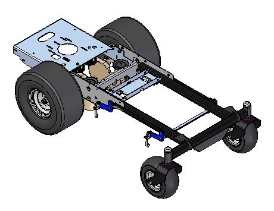
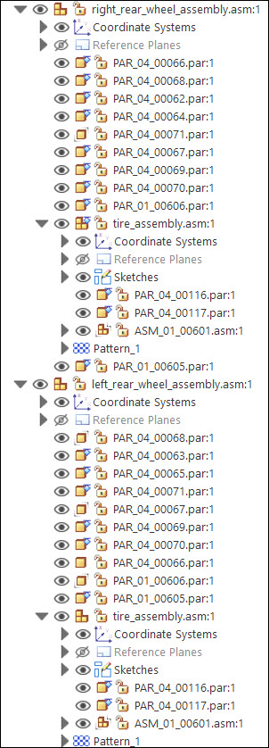
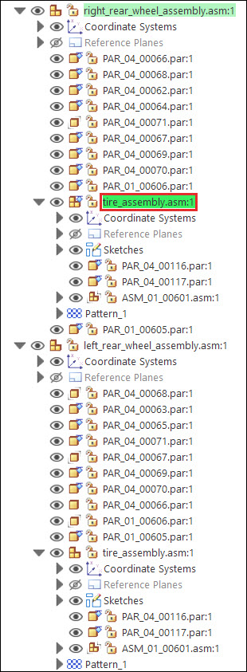
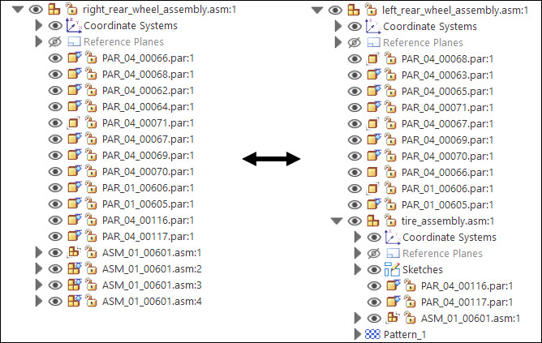
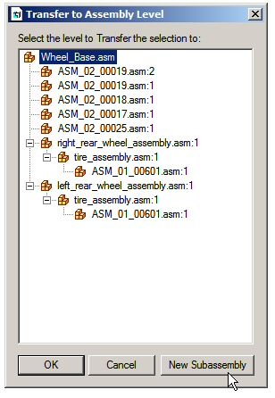
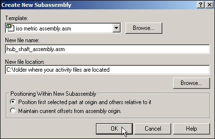
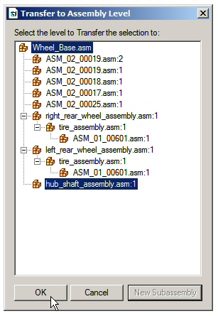
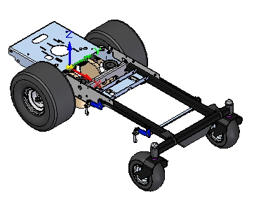

Activity: Transferring and dispersing in assembly
In this activity you will use the Disperse and Transfer commands to change the organizational structure of an assembly.
-
Open the assembly Wheel_Base.asm with all the parts active.

-
In PathFinder, expand the subassemblies right_rear_wheel_assembly.asm and left_rear_wheel_assembly.asm as shown.

Note:Notice an occurrence of the subassembly tire_assmbly.asm is present in both right_rear_wheel_assembly.asm and left_rear_wheel_assembly.asm.
In the subassembly right_rear_wheel_assembly.asm, select tire_assembly.asm as shown.

Choose the Home tab→Modify group→Disperse command .
If prompted: The assembly that you are dispersing contains interpart relationships. If you continue, the interpart relationships could be broken. Continue? Click Yes.
When prompted: Transfer the parts in the selected assembly to the next higher level, and delete the selected assembly occurrence? Click Yes.
When using Inter-Part relationships, the changes in one part can control the size and shape of geometry in another part. If this type of behavior is still desired in the assembly after executing the disperse command, check to see if the links were broken. If they were, you will need to reestablish them.
Compare the differences between right_rear_wheel_assembly.asm and left_rear_wheel_assembly.asm.
Notice the following:
-
tire_assembly.asm only exists in left_rear_wheel_assembly.asm now.
-
The parts that once existed in tire_assembly.asm have been placed in the right_rear_wheel_assembly.asm.
-
The pattern that had four occurrences of ASM_01_00601.asm is no longer a pattern, and those four occurrences have been placed in right_rear_wheel_assembly.asm.

Select the parts hub.par and shaft.par in Assembly PathFinder.
Right-click on the selection in PathFinder, and then click Show Only to hide the rest of the assembly.
Choose the Fit command to fit the view.
Select the parts hub.par and shaft.par in Assembly PathFinder.
Choose the Home tab→Modify group→Transfer command .
The Transfer command either moves the selected parts to a new location in the assembly structure, or combines the selected parts into a subassembly.
Select the top level assembly, Wheel_Base.asm, as the destination for the subassembly being created, then click New Subassembly.

Name the new subassembly hub_shaft_assembly.asm. Direct the subassembly to the folder where the remainder of the assembly resides as shown. Then click OK.

View the destination of the new subassembly. If satisfactory, as shown, then click OK.

Notice the new subassembly consisting of the two selected parts in the Assembly PathFinder.
Right-click on Wheel_Base.asm in PathFinder and then click Show to display the complete assembly, then Fit the view.

Save and close the assembly. This completes the activity.
In this activity you learned the following:
-
How to move parts in a subassembly into a new location in the assembly structure with the Disperse command.
-
How to create a new subassembly from parts within an assembly using the Transfer command, and how to locate the position in the assembly structure for the new subassembly to reside.
-
Click the Close button in the upper- right corner of this activity window.
Answer the following questions:
-
What does the Transfer command do in an assembly document?
-
What does the Disperse command do in an assembly document?
-
Can you disperse a subassembly?
-
What does the Transfer command do in an assembly document?
The Transfer command transfers parts and subassemblies from one assembly to another. You can transfer these parts and subassemblies to any level of the assembly that can be seen from the top level assembly that is open. You can also use the Create New Subassembly dialog box to create a new subassembly for the transferred files. To access the Create New Subassembly dialog box, on the Transfer to Assembly Level dialog box, click the New Subassembly button.
To change the order of the files within an assembly, you can drag and drop parts in the PathFinder.
-
What does the Disperse command do in an assembly document?
The Disperse command transfers the parts in a subassembly to the next highest subassembly and deletes the reference to the subassembly. The command disperses only the top-level occurrence of a subassembly. For example, if a subassembly exists as an occurrence within the assembly being dispersed, the subassembly remains unchanged, but is moved up to the next higher assembly level.
-
Can you disperse a subassembly?
You can use the Disperse command to disperse a subassembly by reassigning the parts to the next highest subassembly and removing the reference to the existing subassembly. The command will disperse only the top-level occurrence of a subassembly. For example, if a subassembly exists as an occurrence within the assembly being dispersed, the subassembly remains unchanged, but is moved up to the next higher assembly level.